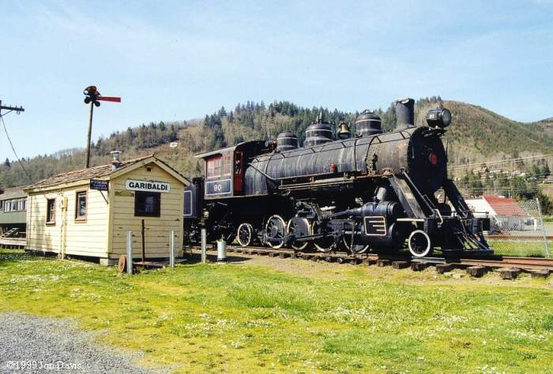
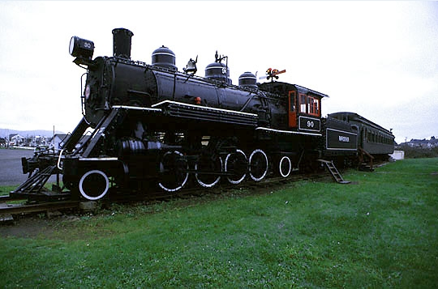

Last updated: 29 June, 2015
| Builder: | Baldwin Locomotive Works |
| Build #: | 59071 |
| Date: | 03/1926 |
| Engine #: | 90 |
| Railroad: | Rainier (Polson Logging) |
| Website: | |
| Email: | |
| Location: | Oregon Memorial Steam Train Association, Lumberman's Park, Garibaldi Station, 306 American Avenue Garibaldi, OR 97118 |
| GPS: | 45.558800, -123.911154NOTES. |
| Phone: | |
| Status: | Restoration |
| Notes: |
This 48-inch driver Baldwin logging Mikado was built in 1926 for the Polson Logging Company of Hoquiam, WA as their #90. #90 continued to operate out of Railroad Camp after Polson became Rayonier Incorporated in 1945 and was retired in the early 1960s. #90 was then sold to the Oregon Memorial Steam Train Association in 1963 and moved to Lumberman's Park in Garibaldi for display. A local group is considering restoring #90, and an optimistic sign claiming a summer 2000 completion date was hanging on the tender when I took this picture in April 1999.
| Class: | 90 ton |
| Gauge: | 4'-8½" |
| F.M.Whyte: | 2-8-2 |
| Drivers: | 48 |
| Gear Ratio: | |
| Tractive Effort: | 35,700 |
| Weight: | 185,100 |
| Weight on Drivers: | 150,100 |
| Length: | |
| Boiler: | |
| Cylinders: | 20x28 |
| Top Speed: | |
| Fuel: | |
| Fuel Type: | Oil |
| Water: | |
| Steam psi: | 180 |